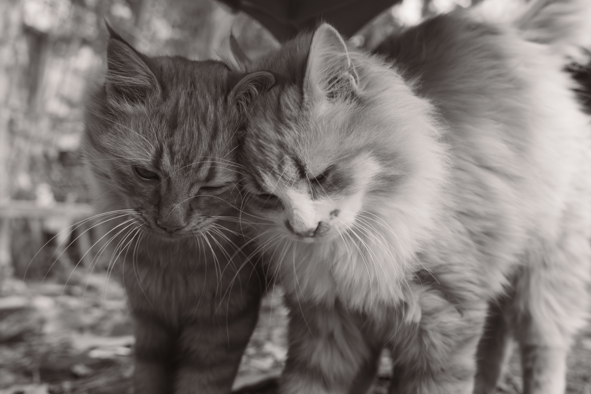
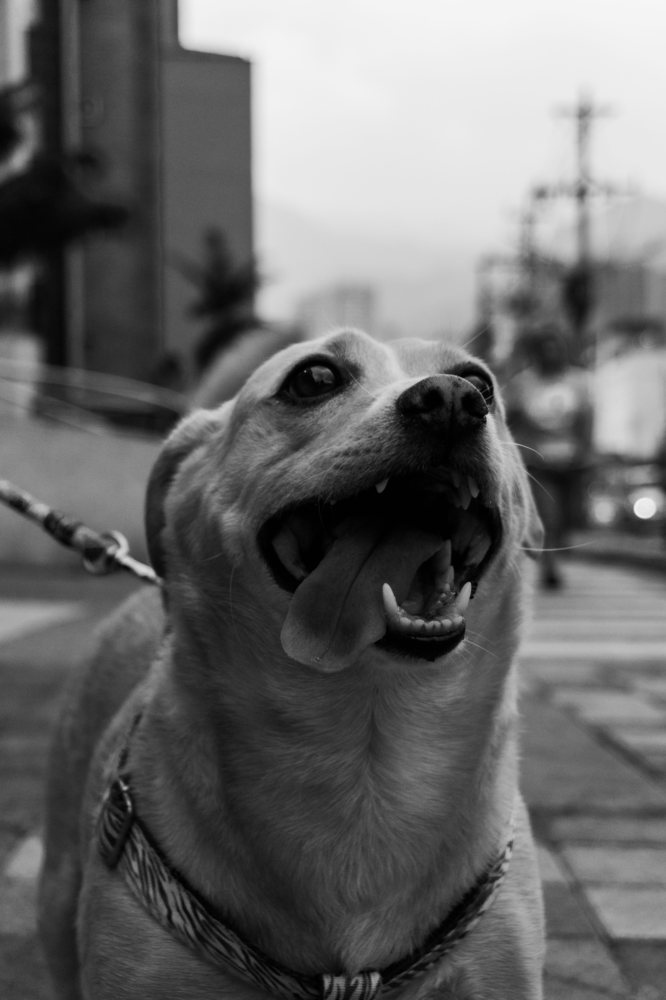

Un refugio hecho por y para el amor animal
Somos una organización sin fines de lucro que rescata, cuida y da en adopción a perros y gatos que lo necesitan, junto a una comunidad de voluntarios.


Nuestra historia
Todo comenzó cuando un pequeño grupo de amigos empezó a rescatar animales de la calle. Con el tiempo, la comunidad se unió y hoy trabajamos para que cada mascota encuentre una familia responsable.
Nuestro equipo
Las personas que hacen posible cada adopción.
Ana Martínez
Veterinaria
Carlos Pérez
Coordinador de adopciones
Lucía Gómez
Voluntariado
Diego Rojas
Rescate
Familias felices
Historias de quienes ya adoptaron con nosotros.
“Adoptar a Luna fue la mejor decisión. El proceso fue claro y el equipo siempre estuvo disponible.”
Familia RamírezAdoptaron a Luna
“Max llegó a casa y en un día ya era parte de la familia. Gracias por el acompañamiento.”
Carla y DiegoAdoptaron a Max
“Nos ayudaron a encontrar la mascota ideal para nuestros niños. ¡Totalmente recomendado!”
Familia TorresAdoptaron a Rocky